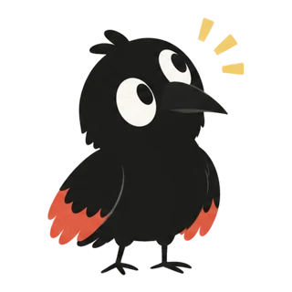
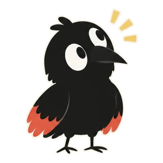
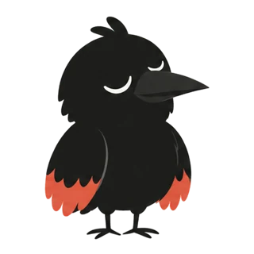
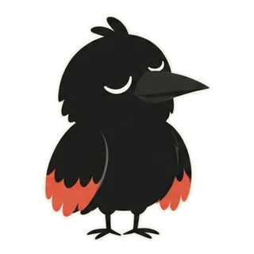
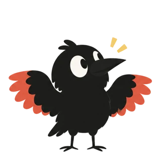
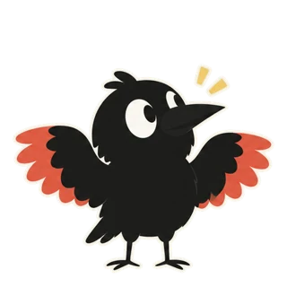
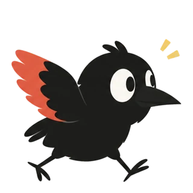
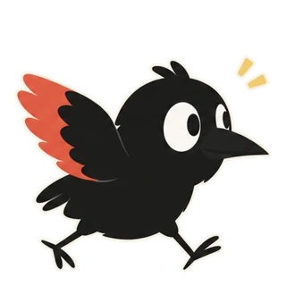

Twenty-one decisions. Each one shows how it would look and how it works. Pick a path per card; I read your picks back from this page.
Connecting…
0/0picked
!Found in the code: fix this whatever you pick
The seven manage_* admin tools are offered to every session and run before its credential is checked (delegation-mcp.ts:174). A session that reads a poisoned page could write a hook that runs on every machine.
The recommended shape
codemodelstoredyououtside
youYoudashboard · the project's Telegram topic
threads with the project
modelCaw · project leada session on any harness, with board tools and no edit toolswakes on your messagea routinea GitHub eventa check resulta fleet nudge
codeDispatcherfrontier · caps · pauses while review is full
starts an attempt
Any machine
modelSessionone per attempt, fresh by default
storedWorkspaceone per task: clone + branch, kept
storedProject foldersynced as files
finish_item
codeHub checks + landing queuerun checks · rebase · re-run · push or open a PR
↺ the result lands on the board and wakes Caw
In one picture
Code coordinates, models judge, you decide
You talk to the project.Caw is its lead: threads, briefs, recaps.
Tasks live on a board.GitHub stays the record for repos.
Code dispatches and lands.Frontier, caps, checks, merge queue.
Sessions are cheap, workspaces last.A fresh session per attempt.
Everything wakes Caw by event.No model polls, none writes status.
Architecture
The whole system, and where Jev sits
Tap a box to see what it talks to. Switch Jev off to see what each part does without it.
codemodelstoredyououtsideJ · asks Jev
Your path
Your picks, and answers to your notes
Read from this page on 2026-10-06. Change a pick and this list updates.
D2
Tasks as files; you choose the tracker
User chooses whether to use GitHub, Linear, or just CawCo (file over app, CawCo tracks stuff as files).
CawCo · filesorGitHub IssuesorLinear→ one record per project, never two-way
x-growth/tasks/142-fix-tray-chip.md
---
status: ready
after: [138]
checks: ["bun test", "bun run lint"]
rank: a0V
labels: [ui]
---
The tray chip overflows at 320px wide…
Agreed. The file is the truth, like the project page's docs already are. The hub keeps an index rebuilt from the files for the frontier and board order. Live state (attempts, workspaces, running) stays in the hub. Agents write through board_write; a hand edit is picked up by hash; git keeps history.
D4
Caw lead, on or off per project
Lead can be enabled or disabled per project by user?
Caw lead · site
BoardDispatcherRoutinesHub checksCaw wakes on events (only when on)
Yes. Off means you write the briefs and nothing wakes a model. Default on for projects made with Caw, off for migrated ones, so there is no surprise spend. Each lead shows its own spend.
D3
Reuse the warmth check; add compress and continue
We kinda have a check for cache warmth, reuse it? We can also have compress and continue integrated here somehow?
New message for a task
codeIdle, same task, cache still warm?
the same promptCacheExpiresAt test checkCold uses today
Yes
modelContinue that sessionwarm cache, cheap
No
codeDoes the history matter?
yes
modelCompress and continuecontinue_session, same workspace
no
modelFresh sessionbrief + last failure
Yes to both. checkCold in delegation-actions.ts already refuses a cold follow-up once with the cost; the attach rule uses the same test. continue_session is the middle branch. You picked it; this is the rule.
Jev
Jev: how it gets turned on, what it does, what happens without it
Jev should be enabled through onboarding via OpenRouter OAuth, or with your own API key for Jev itself. Jev can do a lot more. When it's not enabled we need some sort of fallback.
"Code owns the workflow; the model supplies programmable common sense." Typesafe's own line, and this page's thesis: code coordinates, models judge.
Turning it on, in onboarding and in Settings
Connect OpenRouterOAuth (PKCE), already shipped in Settings. The key stays in the hub DB.
Use your own Jev keyTypesafe's API directly, entered once, held by the hub.
Not nowEvery feature runs in its "without Jev" mode, and says so.
What Jev answers (no text generation; one call, many questions in parallel; ~0.5 s; $0.042 per million input tokens)
yes / noIs this session stuck on the same error?
0.91
choice · up to 255 optionsWhich routine does this event belong to?
0.78mentions
0.15morning drafts
0.07none
score · 2 to 10 levelsHow ready is this task for an agent?
1vague
2needs a check
3ready
Six patterns from Typesafe's skill, each with a job here
Route and fillOne request picks a handler and its typed parameters, asked together in one call.A message from the iOS app ("pause site until 6") becomes an action, a project and a time. An inbound event picks its routine.
Select, don't generateCode finds candidates; a judgment picks one; code copies it exactly.Is this new message about an open task? Pick it, or "none" to file a new one. Recaps quote the session's own lines instead of paraphrasing.
Find and judge evidenceRetrieve, rerank, keep what is relevant.Build a brief's context: rank project memory and knowledge files against the task, include the top few. Skill chips already work this way.
Reusable judgmentsScore dimensions once; code and controls change weights and thresholds without rerunning.Score each task once (clarity, size, risk): the dispatcher orders and routes by weights you can tune. X drafts scored on voice and hook become features the weekly loop correlates with views.
Verify and escalateCheck claims against evidence; uncertain cases go to a person or a reasoning model.Judged checks for non-commit work: one question per acceptance criterion on a report or a post. Recap claims checked against their events. Unsure goes to Caw, then you.
Respond to changing stateFresh judgments guide the next bounded step; keep inferred state apart from observed facts.Fleet watch re-asks on fresh transcript slices. A Jev answer is never status: the derived-liveness law already keeps those apart.
Jev off: who decides. First, a model already in the loop: the lead, or the session that is asking, with its own model and never about its own work. Questions with no session behind them wait for the lead's next wake and go to it as one batch, not one turn each. Last, the rule. Answers keep Jev's shape (yes/no, choice, score), and the card says who decided.
Where it plugs into this design
Use
Kind
With Jev
Jev off: who decides
Fleet watch (D5)
yes/no
Stuck? looping? off-task? Only a yes wakes Caw triage.
A second code signal wakes Caw's triage, which decides. A session never judges whether it is stuck itself.
The lead triages with its model, one batch per wake.
Duplicates
yes/no
Is task A the same work as B? Fan-out over candidates.
The session filing the task compares it with candidates code finds. No session: exact match on files and checks.
Event routing (D10)
choice
Which routine or project does this event belong to?
Matcher filters (author, label, regex). Unmatched events go to the lead's next wake as one batch.
Delegate type
choice
Which preset fits this brief?
The delegating session or Caw picks from the catalog with its own model. A routine names its type; else "medium".
Grounded recaps
yes/no
Is each recap claim backed by its cited events?
Rule: recaps list events only. The lead can't check its own recap.
Judged checks (D6)
yes/no ×N
One question per acceptance criterion on a report, brief or post.
The lead reviews with its model, never the delegate that did the work. Lead off: shell checks, then you.
Brief context
score ×N
Rank memory and knowledge files for this task; include the top few.
The lead picks files when it writes the brief. No lead: the whole brand kit and the newest notes.
Phone requests
choice + fill
Action, project and time from one sentence.
The lead reads the sentence with its model. Buttons and pickers always work.
Dispatch order
score ×3
Clarity, size and risk per task; code weights them.
The lead ranks when it plans. Else board order.
X voice check
yes/no ×N
One question per brand-kit rule, on every draft.
The lead or a reviewer type checks each rule, never the writer that drafted it. Else lint-style rules: length, banned words, "!".
Rules that hold either way. Off is a mode you can see on every feature ("Jev off · decided by Caw" or "Jev off · using rules"). On but failing is never quietly downgraded: the feature says Jev failed and does not hand the question to a session, which keeps your 2026-09-23 "no fallbacks" decision for errors. Typed answers guarantee the shape, not the truth, so every threshold is tuned on CawCo's own logged cases, a confidence is never permission to act, and Jev never writes status or answers a permission. The key stays in the hub. Text goes to OpenRouter or Typesafe, which is why it is opt-in. Sources: Typesafe's agent skill and the Jev plan in .design-foundations.
To-dos
Can sessions set their own to-dos? Three layers, one word each
Are agent sessions able to set their todos etc? Where does this fit?
Tasktasks/151-dark-mode.md
#151 Add dark mode toggle · after #142 · checks 3
Lasts: until done. Writes: you, Caw (board_write), workers in their project (task_write).
↓ inside the task file
To-doschecklist in the file
Token for the togglePersist the choiceScreenshot both themes
Lasts: with the task. Writes: you, Caw, and the attempt's session through todo_write (its own task only).
↓ inside one attempt
Planthe harness's own list
Read theme storeAdd toggle to headerRun checks
Lasts: one session. Writes: the session itself (Claude Code's task tools, OpenCode's todos). CawCo only reads it: the progress ring on the attempt.
Yes, at two levels. Every session already keeps its own plan with the harness's native tools, and CawCo already reads it (the task ring on a session). New: the session can tick and add to-dos on the task it is working on through todo_write, which also gives pi a list it lacks. When an attempt ends, plan items left open become proposed to-dos or follow-up tasks for Caw or you to accept. A plan never edits the board by itself.
Do nested to-dos collide with the ticket system we adopted from Matt? Can they hook into it? Do agents see overall progress?
Task or to-do
Needs its own attempt or checks, or can block or run in parallel: a task. to-tasks writes it, with edges. Tasks link; they don't nest.
A step in the same attempt and workspace: a to-do. To-dos nest, as indented checkboxes.
A to-do that grows is promoted to a task with an edge. Its line becomes - [ ] → #152 and ticks when that task lands.
Triage, edges and the dispatcher only ever see tasks.
With GitHub as the tracker: tasks are issues, a spec is a parent with sub-issues, to-dos are the issue's task list.
Who sees progress
Today, barely: a session sees its own plan, its work item, its own delegates and workflow state. There is no project board to read.
Every brief says where its task sits: the spec, what landed upstream, what waits on it.
board_read by role (D7): a worker reads its project's board and its task's to-dos; Caw reads everything, plus each attempt's plan ring.
Progress is derived, never stored: to-dos ticked for a task, tasks landed along the edges for a spec. Ticking every to-do never makes a task done; checks and landing do.
We need a toggle that disables the harness's own to-do list so sessions use CawCo's; otherwise they skip CawCo's updates and the two drift.
The drift is real, but it comes from to-dos that are done and never ticked, not from the plan being different. The plan is the session's working steps; to-dos are the task's checklist. Turning the native list off has costs: models are trained and nudged to keep it (Claude Code reminds the model when its list goes stale), and CawCo already reads it straight from disk (~/.claude/tasks/<session>/) without storing it, so that layer can't drift. So link the two lists, in code:
The brief asks the session to start its plan from the task's open to-dos, keeping their ids ([td-3] Persist the choice).
When a plan item carrying a to-do's id completes, the hub ticks that to-do. CawCo already watches the list.
finish_item lists any unticked to-dos, and the session ticks or explains each one, like an acceptance check.
Plan items still open at the end become proposed to-dos.
I already disable Claude's subagents in favour of delegates, so onboarding should let the user decide the same for to-dos; each harness can turn its own off.
Agreed. Onboarding asks both once, at the fleet level: delegates instead of subagents, and CawCo's to-dos instead of each harness's own list. Both use the fleet's denied-tools baseline you already use for subagents, and both can be changed in Settings or per delegate type. Claude Code denies TaskCreate, TaskUpdate, TaskList and TaskGet. OpenCode denies todowrite and todoread in its permission config; CawCo's OpenCode adapter has to learn to write that. pi has no list of its own. With CawCo's to-dos on, todo_write also holds the session's steps, and the progress ring reads CawCo's list. With it off, the id link above keeps the two in step.
D14
Our own three skills
Are these valuable here?
Keep the ideas
end-to-end tasks with blocking edges
acceptance criteria per task
interview before planning
triage states
Drop the plumbing
their tracker setup
scanning files for ready work
in-harness implementers
grillto-taskstriage
CawCo's board and dispatcher replace the plumbing. Three slim skills, any harness: interview to a spec, spec to tasks with edges and checks, and triage.
D11
Telegram pending; the iOS app first
Only if Telegram is enabled. Disable Telegram for now, put it in pending; focus on the iOS app to push more users there.
Found in apps/appleHome, sessions, delegate tray, new project and the assistant panel are there. Push notifications are not: no UNUserNotification or APNs anywhere. Telegram is what reaches you today when the app is closed.So, in order: push from the hub (content-free, an Apple push key on the hub), then Caw's project threads, then approvals in the app. Telegram topics wait in pending.
D5
Jev is the gate for the fleet watch
Jev is helpful here?
Yes, it's the best use of Jev on this page. On a fresh slice of each transcript it asks three yes/no questions: stuck on the same error? looping? off-task? Each takes about half a second, so it can run often. Only a yes wakes Caw's triage, so Caw's turns go to real cases. With Jev off, a second code signal wakes triage (the same error three times, no file changed in N turns, a repeating tool call), and Caw decides with its own model. A session never judges itself.
D14
Write the skills with writing-for-agents
Use mattpocock's /writing-for-agents to write these.
Agreed. It's his skill for exactly this: "Writing documents for agents: skills, AGENTS.md/CLAUDE.md, and any doc an agent reaches by a pointer." Its rules match ours:
The description decides when a skill fires, so the trigger words go first.
Inline what every branch needs; put the rest behind pointers.
Each step gets a completion criterion you can check.
One source of truth, the target action stated instead of a ban, and no sentences that change nothing.
It writes grill, to-tasks and triage, the design skills (screen, restyle, drift), and the starter skills each template ships with. It's pinned like the others (D15).
D17
"Ask Caw for a view"
Optional: let agents build a view. "Let Caw create a custom view for you", using BYOA.
Yes, as an optional button beside the view picker. Caw runs on your own agent, the harness and model the project already uses, so there's no extra provider.
What it writes:views/<name>.json, an A2UI view over CawCo's catalog, bound to data the hub computes (tasks by stage, fields, dates).
When it's kept: it shows you a live preview and saves only when you approve.
What a view can't do: run code or reach the network.
A missing component: Caw says so instead of inventing one.
The built-in views (board, table, calendar, pipeline) stay the default.
Example
A project that grows an X account
A test of the primitives: drafting posts, answering mentions, learning what works. API access is assumed; every post waits for you because that is what you asked Caw for.
1
Set it up by talking to Caw
One message. Caw proposes the whole project and shows it before anything runs.
New project·Caw
10:02Grow @you on X. Three posts a day about self-hosted agent fleets. Reply when people mention me. Never post without my OK.
X connector · keys in the hubbudget · $3 a dayapproval · every postlead · Caw
4
The day's posts cross the board
Drafts land in Needs you. Approved posts wait in Scheduled. Posted ones carry their numbers.
x-growthboard@you · X
Ideas32
Drafting12
Needs you21
Scheduled12
Posted12
build log
How the hub finds your machines with mDNS
self-hosting
Running a whole fleet from one Pi at home
fleets
Reuse the board screenshot format
self-hosting
Why the hub stays on your own machine. Your keys never leave.
61/28017:30
drafting
Reply to
@sample_readerYes, it runs on a Pi.
50/280
build log
Week 12: mDNS discovery shipped, one bug fixed, one rewritten.
62/28015:00
Approved
self-hosting
Self-hosted agents, one rule: nothing posts without you.
2.1k views56 likes
fleets
Shipped the fleet board today. One page, every agent, every machine.
68/28012:30
drafting
Approved
01204808601.2kviews092138likes
5
Approve from your phone
One push, one stack. Approve, edit or drop; approved posts go out at their slot.
11:58
x-growthX · @you


CawConow
x-growth · 3 drafts ready for 12:30
Review·12of 3
@youlearning
Screenshots got 2.4x the median views. More of those.
for 17:3052
@youhow it works
Claude Code, OpenCode and pi on one board. Approve from your phone.
for 15:0066 / 280
@youbuild log
Shipped the fleet board today. One page, every agent, every machine.
for 12:3068 / 280
Scheduled 12:30
6
Replies, drafted safely
Mentions are untrusted input. The session that reads them can draft, never post. Code posts exactly what you approved.
untrustedmention · 09:12
@sample_reader: does this work with OpenCode too?
Reply drafterweb-facingmodel
draft_replyknowledge_search
X API · postno posting tool in this role
Draft
Yes. OpenCode, Claude Code and pi run side by side.
You · Approveyou
Postercode
posts exactly the approved text · keys in the hub
Reply posted1 per mention
7
It learns what works, with your OK
Friday's recap turns numbers into a proposal. One tap and next week's drafts use it.
x-growth· Weekly recapcurator
Median views by post typelast 3 weeks
2.4x
1.4x
1.0x
0.8x
screenshotthreadlinktext
Posts with a screenshot got 2.4x median views over 3 weeks. Add to the playbook?
21 posts3 weeks
→ project memory
Next Monday's draftuses: screenshot rule
This week's fleet board, one page for every agent.
Mon 09:00 · X · waits for you
Every post waits for youYour own rule from step 1, enforced by the hub.
Mentions can't postThe drafting session has no posting tool.
Keys stay in the hubSessions never see the X credentials.
Spend is cappedA daily budget per routine.
Check
Do the primitives cover it?
Step
Primitive
Status
Set up by talking
Caw lead, onboarding templates, project folder
planned · P1–P2
Teach the voice
grill skill, brand kit as project memory; Jev scores each rule
planned · P4
Morning drafts
Routine (cron) → fresh session in the web-facing role
planned · P3
Drafts as cards
Tasks as files with a non-commit output (the post text, media)
planned · P1, D6
Approve from the phone
Needs-you + iOS push
planned · P2
Post at 12:30
Approved action: an exact tool call you approved, run by the hub through the connector at a set time, once (outbox, idempotency key)
gap · new
Notice new mentions
Connector poller: poll any connector tool on a schedule and diff the results into inbound events (today's plan polls GitHub only)
gap · widen D10
Draft replies safely
Role toolsets (D7): drafter has no posting tool
planned · P2
Keys out of sessions
Hub-held credentials (the fleet MCP proxy already does this)
exists
Numbers per post
Routine reads stats, writes them into the task file as dated facts
planned · P3–P4
Weekly learning
Recap routine → curator proposal → project memory
planned · P4
Daily budget
Budgets (D6) applied to routine runs, not only delegates
gap · small
Mostly yes. Two real gaps: an approved action primitive (you approve an exact call; code runs it once, at a time, never a model), and a generic connector poller for ingress. Budgets also need to cover routine runs. All three also serve code projects: "merge this PR at 18:00", "watch this API", "cap this routine".
Evidence
Ten numbers that shaped the paths
6 appsChatGPT, Claude, Cowork, Gemini, Perplexity, Manus: one shape. Instructions, files, chats, memory per project.A project is a folder agents can read.Willison · OpenAI forum~50%Cowork's Dispatch on non-trivial tasks, and only while the laptop is awake.Daemons on every machine fix that.Release notes · The RegisterApr 2026Vibe Kanban shut down. What lasted keeps GitHub or Linear as the record.The board is a view, not a rival tracker.Symphony SPEC+91%PR review time on AI-heavy teams. Delivery stayed flat.Stop dispatching when review is full.Faros10k→200kTokens per turn after 20 loops in one session.Keep the workspace, replace the session.plugins #125−3% · +20%Success and cost with LLM-written context files. Human-written: +4%.You write rules; agents write to an inbox.ETH Zurich1 catch-upClaude's scheduled tasks run fresh and catch up once, within 7 days.One fire, one session, one deliverable.Docs16 of 27Manual orchestration actions that needed no judgement in a logged 10-day run.Code coordinates; models judge.Dispatch30–50Tools before Claude's tool choice degrades. GitHub's MCP cut 101 to 52.One server, a toolset per role.Tool search3–8Agents steipete runs in one folder. No tracker: "just talk to it".Talking stays the main interface.steipete.me
Shape
What a project is, where its work lives
D1
What is a project?
Not picked
Today: one folder on one machine. The same repo on two machines is two projects.
Existing rows migrate as one place each. Marketing work gets a home: the hub folder holds AGENTS.md, knowledge, assets, memory, routines and project skills, synced to machines as files. "Hub folder only" is simpler, but code still lives in checkouts, so repo projects would have two copies of the truth.
D2
Where do tasks live?
Not picked
Agent boards that competed with GitHub died. Two-way sync gives one field two owners.
How it would look
siteboard6 tasks
Ready21
Running12
Needs you1
Review12
Done12
#151
Add dark mode toggle
after #142queued
tsk-9
Write launch brief
#146
Cut v0.4 release
Approve
tsk-5
Draft changelog
+42-8
#130
Bump Bun to 1.3
done
#142
Fix tray chip overflow
queued+18-3done
#142 GitHub issuetsk-9 CawCo taskblocked by
How it works
Repo project, GitHub opted in
outsideGitHub Issuesthe record: title, body, labels, state
↓ poll with ETag↑ comment · label · PR link
codeCawCo overlayrank · edges · attempts · checks
Every other project
storedCawCo boardthe record: every field
both render as
One board viewcolumns derived from live state
Details
Columns are derived from live state, never dragged into "Running". GitHub owns issue fields; CawCo owns rank, edges, attempts and checks. Projects v2 webhooks exist only for org projects, so user projects are polled.
D3
Task → session: spawn or attach?
Not picked
Keep the workspace per task. Make sessions cheap. Attach only while it is clearly cheaper.
How it would look
#151Running
Add dark mode toggle
Checks12
bun run typecheck
bun test
bun run lint
Attempts
Attempt 1failedchecks 2/3ended
Attempt 2runningws-4f2a
40%
Continue only while idle, on this task, under 40% context
How it works
storedInboxfiled, not yet briefed
brief and check written
storedReadycan be picked
⇄ Blocked while a blocker is open; back to Ready when it lands
dispatcher picks it
Attempt · read live, never stored
liveRunning
finish_item
liveCheckingthe hub runs every check
↺ a check failed: back to Running
all passed
liveLandingrebase, re-run, push or open a PR
↺ failed outright: back to Ready, retried in a fresh session
it lands
If it lands as a PR
storedReviewwaits on you
↺ changes requested: a new attempt
merged
storedDone
If it lands on main
storedDoneno review step
Details
attach_or_spawn(task, message)
s = task.latest_attempt.session
if s is live and idle and s.task == task and s.context < 40%
continue s # warm cache
else
new session in task.workspace # brief + last failure + batched comments
Running, Checking and Landing are read live from the attempt, never stored: the derived-liveness law applied to the board.
Who runs it
Caw, the fleet watch, delegates, tools
These replace the supervisor, autopilot and assistant panel: a small model's one-shot verdict per turn, with no tools, memory or board.
D4
The project lead
Not picked
You talk to the project in threads. Caw files, briefs, answers and recaps. He wakes on events.
How it would look
site · Caw/Morningproject lead
Routine·08:55·3 new GitHub issues
Caw08:56
Filed 2 tasks from the 3 issues.
#142Fix tray chip overflow
check bun test
#151Add dark mode toggle
after #142
1 likely duplicate of #120 — merge?
08:58Merge it
Since 09:0009:14
#142 landedev-3121
#151 retried freshev-3126
Review queue fullev-3130
Message the project…
A day, step by step
YouCaw · modelHub · codeWorker · model
1
Hub→Cawwakes Caw
Routine fires at 08:55 with 3 new GitHub issues
2
Caw→Hub
Files 2 tasks with checks, B after A; flags 1 likely duplicate
3
Hub→Worker
Starts A in ws/a1; B waits for A
4
Worker→You
Permission ask, on Telegram
5
You→Worker
Approve
6
Worker→Hub
finish_item
7
Hub· on its own
Runs checks, rebases, lands A on main
8
Hub→Worker
Starts B, cut from the new main
9
Worker→Hub
finish_item fails three times
10
Hub→Cawwakes Caw
Wakes Caw with a failure digest
11
Caw→Hub
Rewrites B's brief; retry in a fresh session
12
Hub→Cawwakes Caw
Review queue full; dispatch paused
13
Caw→You
Recap in the project's thread
Who does what
Duty
Who
Status, liveness, stalls
code
Frontier, caps, retries, landing
code
Exact dedupe (same files, same check)
code proposes, lead confirms
Plan, split, write briefs and checks
lead
Read a failed check, retry or rescope
lead
Recaps, each claim citing an event id
lead
Permissions, merges, config writes
you
Gas Town's docs show prompt-only role rules break under pressure, so the lead simply has no edit or shell tools.
D5
Watching the whole fleet
Not picked
Detectors in code, two sources, then one short Caw decision. Nudges go to the lead.
How it would look
Fleet · Home2 machines · 5 sessionswatching
Needs you


Nothing needs you
launch-q4 · writer session stalled 18 min · second source agrees
Watching every session
no output 15 minsame tool ×5spend over budgetchecks failed ×3
triage1 decision
templated nudgeneeds-youstop
How it works
codeNo transcript growth15 min while working
codeSame tool call5 times in a row
codeSpend rateover the budget line
codeChecks failed3 times
codeDoes a second source agree?
no: log it and stop there
yes
modelCaw triage runfresh context · one decision · exits
one of three
Known case
codeTemplated nudgeto the project lead, never the worker
Judgement call
youNeeds-you rowand a Telegram message
Runaway
codeStop the sessionits owner is told why
Details
Gas Town built "Boot" for exactly this: wake, decide once, exit, because a resident watcher burned money in idle towns. Its docs also record false stuck alarms from a single heartbeat store, hence the second source.
D6
Delegate upgrades, first
Not picked
Pick any. Landing is just a sentence in the brief today, so "done" never meant "on main".
How it would look
sitews-0a1eobelisk
auth-rework3 delegates · one report when all settle
Edges live on tasks, so a retried blocker never leaves dependents pointing at a dead attempt. A dependent's workspace is cut after its blockers land, from the new base. A failed blocker marks dependents blocked, not failed.
D7
One MCP server, or several?
Not picked
Which tools each role sees matters more than how many servers there are.
Try the roles
Tool surfaceby session roletools/list
6tools4 always loaded2 deferred
corehandoffdelegatesend_to_user
boardboard_read
tasktask_write
knowledgeknowledge_search
4tools3 always loaded1 deferred
itemfinish_itemwait_item
corehandoff
todotodo_write
10tools4 always loaded6 deferred2 asks you first
corehandoffdelegatesend_to_user
boardboard_readboard_write
tasktask_write
knowledgeknowledge_searchknowledge_write
routineroutine_write (asks you first)
settingssettings_write (asks you first)
5tools3 always loaded2 deferred1 asks you first
fleetfleet_readlist_sessions
controlstopinterrupt
adminadmin_hooks_write (asks you first)
4tools3 always loaded1 deferred
coresend_to_userhandoff
knowledgeknowledge_search
tasktask_propose
never in this roleadmin_hooks_writeadmin_mcp_servers_write
Why not several servers
cawco_admin+rules_write→cawco_admin_rules_write
cawco+admin_rules_write→cawco_admin_rules_write
OpenCode joins server and tool with "_": two different tools, one name.
cawco+role from credential→one list per role
The 2026-07-28 MCP spec lets the tool list vary by credential.
Details
New tools are named group first (board_write, admin_hooks_read) so a pattern allows or denies a group. Admin tools split into read and write; writes ask you first. Existing hot names (delegate, handoff) stay. pi gained native MCP on 2026-09-29, so it can share the same names.
D16
Project delegates
Not picked
Delegate types are fleet-wide today. Let each project define its own: harness, model, effort, skills, MCP, role, budget.
How it would look
x-growth · Delegates3 project · 2 from fleet
writerClaude Code$2/day
claude-opus-5-5
can't postbrand-voicex-post
analystOpenCode$1/day
opencode-go/deepseek-v4-pro
researchmcpx-read
replierpi$1/day
claude-sonnet-5-5
can't postbrand-voice
mediumfleetClaude Code
claude-sonnet-5-5
deepfleetClaude Code
claude-opus-5-5
A project file named medium.md would win over the fleet type.
delegates/writer.md
---harness: claude-codemodel: claude-opus-5-5effort: highskills: [brand-voice, x-post]mcp: []role: web-facingbudget: $2/daylands:needs-you---Draft posts in the brand voice.Never post; drafts go to Needs you.
delegates/analyst.md
---harness: opencodemodel: opencode-go/deepseek-v4-proeffort: mediumskills: [research]mcp: [x-read]role: workerbudget: $1/daylands: board---Pull last week's numbers.Summarise them in plain terms.
Routing
#t-31no type
Draft Tuesday's thread
Jevpicks by probability
writer0.82
analyst0.11
replier0.07
writerClaude Codeopus · high
#t-32no type
Weekly numbers
Jevpicks by probability
analyst0.88
writer0.07
replier0.05
analystOpenCodedeepseek · medium
A type is a file
x-growth/delegates/writer.md
---
harness: claude
model: claude-opus-5-5
effort: high
skills: [brand-voice, x-post]
mcp: [x-read]
role: web-facing # its toolset (D7)
budget: { usd: 2, per: day }
lands: none # drafts, not commits
---
Draft posts in the brand voice.
Never post; drafts go to Needs you.
which type runs a task
task names one → that type
else Jev on → choice over the project's types
else → Caw picks, or "medium"
lookup project file, then fleet type of that name
Details
A type carries its role, so a web-facing writer never gets posting or admin tools. The dispatcher runs a type only on a machine where its harness and model are installed and signed in. The catalog a session sees is fixed at its start, because the delegate tool's description feeds the prompt cache (as the code already does). Keep it short: a project shows its own types plus at most a few fleet ones. Caw can propose a new type as a file diff you approve. Routines name a type too, so "morning drafts" always runs as writer.
Knowledge
Memory, brand kits, assets
D8
Does memory change?
Not picked
You own the rules. Agents write to an inbox. A weekly curator proposes; you tap.
How it would look
launch-q4· Memory · 3 proposalscurator
Inbox·41 notes·3 ready to promote
Project memory1213
Headlines under 60 characters performed best in Q3 tests
2 sessionsobelisk, macbook3 weeks
+Add to project memory
Use bun run typecheck, not tsc, in this repo
4 sessionsobelisk5 days
Supersedes an older note Typecheck with tsc --noEmit
Brand voice: no exclamation marks
3 sessionsmacbook2 weeks
+Add to project memory
filterRoutine, heartbeat and web-tainted notes are never proposed
How it works
You own · loaded into every session
storedFleet CLAUDE.mdevery machine, as today
storedRepo AGENTS.mdchanged by PR
storedProject memoryhub folder, synced as files
loaded at session start
modelSessionsany harness, any machine
cawco memory note
storedAgent inboxeach note tagged with session, machine and source
routine, heartbeat, subagent and web-tainted notes never become candidates
↺ accepted: into project memory, or a PR to AGENTS.md
A knowledge project's brand kit
launch-q4· Brand kitknowledge project
Every skill in this project reads this kit
Voiceseo-audit
Short sentences. No exclamation marks.
Say what it does, then stop.
Name the tool. Skip the hype.
Do / Don'tseo-audit
DoSelf-host your agents.
Don'tUnlock AI power.
Keyword factsseo-audit
self-hosted agent dashboard8 wk left
1.2k/mo · source: Ahrefs · expires 2026-12-01
agent fleet managerexpired
880/mo · source: Semrush · expires 2026-09-15
Audiencesseo-audit
indie devssmall agencies
Assetsseo-audit
hero-v3.png
og-card.png
logo-mark.svg
board-shot.png
Details
Routine, heartbeat, subagent and web-tainted notes never become candidates (OpenClaw's audit found most auto-captured memories were noise). Memory benchmarks are contested; a plain filesystem agent beat Mem0's graph variant on LoCoMo in Letta's test.
Time
Routines, webhooks, your phone
D9
How routines run
Not picked
Schedules live in the hub's SQLite. Effect 4, already here, parses cron with time zones.
How it would look
Routineslaunch-q43 routines
Morning triagefresh sessionPause
weekdays 08:55nextin 2 h 14 m
SEO audittop 20 pagesPause
Mon 09:00nextpaused
Weekly recapto #launch-q4Pause
Fri 17:00nextin 3 d 6 h
last 8 runsokskipped, overlapfailed
Each tick
tick
BEGIN IMMEDIATE
insert run(routine, slot) # fires once
next = Cron.next(cron, now) # misses collapse
COMMIT
overlap? skip, say why
else fresh session
hub start
one catch-up, newest slot
output
NO_REPLY silent
AUTOMATION_FAILED retry, Telegram
anything else the deliverable
Details
Agent-created routines expire after 7 days unless you keep them. A new routine runs once right away as a test. Infra status and the task's result are reported separately.
D10
Webhooks, hub never public
Not picked
Poll by default; a 304 is free. An optional relay only ever reaches a one-route listener.
How it would look
Inboundlaunch-q4
poll every 60 s · last 304 · 0 of 5,000 calls used
github
pull_request.closed#158
→duplicatedropped
github
pull_request.closed#158
→matchedLand and recap
relay
stripe.checkoutevt_3f..
→no matchkept 7 days
github
issues.opened#160
→matchedMorning triage
How it works
Default
outsideGitHub
poll every 60 s with an ETag; a 304 is free
codePoller in the hubtailnet only, as today
Optional relay
outsideGitHub or any source
signed POST
outsideFunnel or Cloudflareone public path, nothing else
/hooks/:id
codeReceiver on 127.0.0.1HMAC check · 1 MB cap · not the hub API
both write
storedinbound_eventunique on source + delivery id
codeMatcherauthor · label · branch · regex
codeRoutine runfresh session, or a message to the lead
Setting it up
Mostly a script, with Caw for the parts that need you. Turning the relay on is one action, from Caw, from Settings, or with cawco relay on.
Step
Who
How
Pick the host
code
The machine that is online most; you can change it.
Allow Funnel on the tailnet
you, once
If the tailnet doesn't allow it yet, Tailscale prints a link to approve it, and Caw shows you that link. Cloudflare Tunnel is the alternative.
Open one path
code
After an approval card, the daemon runs tailscale funnel --bg for /hooks/ only, pointing at the receiver.
Create the hook
code
An id and a secret, kept in the hub.
Register it at the source
codeCaw
Through the source's API where it has one (GitHub, Stripe). Otherwise Caw walks you through pasting the URL and secret, with copy buttons.
Prove it works
code
A test delivery (GitHub sends a ping). The connection then shows "last event 2 min ago".
Route it
Caw
Proposes a matcher and a routine, as a file diff you approve.
It lasts. The hub stores the wanted state: which host, which hooks. Each daemon checks it on start and puts the Funnel path back if it's missing, the way fleet MCP servers are kept in sync. If the host goes offline, events fall back to polling and the connection says so.
People hear about it when they need it. Caw's brief carries one line: "Inbound: polling GitHub every 60 s; relay off; ask me to turn it on for instant events or for services that only push." When you connect a service that only pushes (a form tool, Stripe), Caw offers the relay right then. Settings › Connections shows "Relay off · Set up". Turning it on is an admin action, so it's only in the lead's toolset and always asks you first.
D11
The project, from your phone
Not picked
Telegram today only answers asks. A topic per project gives Caw a place to talk.
How it would look
09:14
CCawCo3 topics
#
fleet09:12
launch-q4 writer stalled 18 min2
#
site09:14
Caw · Recap since 09:001
#
launch-q408:41
Caw · #163 review request
# site3 members
Caw bot
Recap since 09:00: #142 landed, #151 retried fresh, review queue full (3).
One word per concept. Pick, and the preview rewrites itself.
Live preview
site · 4 tasks readyNew task
Routine · Morning triagenext run 08:55
Session · Fix tray chipplan 3/5
Your tasks will appear here. File one to see it on the board.
Showing the recommended words until you pick.
The options
conceptABC
board unit task ticket card
session's list plan tasks tasks
one try at it attempt attempt attempt
scheduled work routine schedule automation
Board unit
Scheduled work
D13
Caw at the centre
Not picked
You start a project by talking to Caw. His poses carry the personality; the copy stays calm.
New project
What are we working on?
Set up a board for github.com/you/site
Start
Set up a board for github.com/you/sitePlan the Q4 launch campaignAudit our top 20 pages every MondayTurn our voice doc into a brand kit
Fits your promptcodeShip from a GitHub repoIssues as tasks · PRs · morning triage
Fits your promptknowledgeBrand kitVoice · do and don't · audiences · assets
Statuses that keep their meaning in a project
ready project idleworking lead thinkingneeds-you a question


done task landed


trying a retryidle nothing due
References
Caw peeks over the template he suggests, the same move DESIGN.md gives the channel cards (caw-peek). Seen in Gamma, Notion AI, Cofounder, Finch. He moves only while something is going on, and the needs-you wave is never a hello.
Poses
Eight new poses to generate
Grey Caw is a stand-in. Copy a prompt and run it locally with MiniMax.
Shared prompt bases
STILL BASE: Caw, the small round fluffy crow from the attached pose sheet. Keep his exact design, proportions and inks (black, vermilion, eye white, yellow); do not redraw or restyle him. Flat vector fills, no gradients, no texture, no shading. Plain flat paper background (#F4F0E6), no shadow, no text, no other characters. Full body centred in a square 512 x 512 frame with clear margin on every side. Any prop in flat cream.
MOTION BASE: Animate from the attached still. Hand-drawn keyframe animation held on twos, locked camera, the same flat inks, plain paper background throughout. Caw stays wholly inside a 3.5% safe margin on every frame. About 5 seconds, 124 frames at 24 fps. A loop ends on exactly the starting drawing; an enter starts on an empty frame and ends on the still.
Skills
Procedures, and where they apply
D14
Matt Pocock's skills for code
Not picked
CawCo becomes a fourth tracker for them. The skills run unchanged; the frontier becomes real.
Project scope exists, but reaches one folder. Delegates and other machines never see it.
How it would look
launch-q4· Skills
Today Proposed
seo-auditscope: projectlaunch-q4
Todayonly obelisk gets it
obelisk~/code/site
pendingwrittenhash okwritten
macbook~/src/site
pendingwrittenhash oknot reached
ws-4f2adelegate clone
pendingwrittenhash oknot reached
hub foldersessions with no checkout
pendingwrittenhash oknot reached
How it works
skill seo-audit scope: project
- <cwd>/.claude/skills on one machine+ every place of the project
+ obelisk ~/code/site
+ macbook ~/src/site
+ ws-4f2a delegate clone
+ hub folder
Any kind of work
Stages, views, design work and decisions
A social project needs Draft, Scheduled and Posted. Outreach needs Contacted and Replied. A design project needs one place to see what was made, point at it and pick. And any project needs a way to decide things with Caw the way we decided this page.
D17
More stages than four
A social media project might want a different view for its workflows, with more states like draft and posted. Same for outreach and other knowledge work.
Yes. Each project names its own stages in a file, and every stage is filed under one of six fixed kinds: to do, active, waiting, you, done, dropped. Linear works this way: teams name their own statuses, but each one belongs to a fixed type. The kinds are what let the dispatcher, Needs you, budgets and recaps keep working whatever the stages are called. Views (board, table, calendar, pipeline) are settings over the same tasks, not code.
D18
Adapters, or just show the results?
If a design tool has an MCP, people can use it outside CawCo and I don't need to build for it. Unless adapters that show the results in CawCo are easier?
Agreed, and showing results needs no adapter. pen.dev, Paper, Figma, Penpot and Open Design all ship an MCP, so a session already designs in them and can save a screenshot or the code of what it made. CawCo already shows those: show_preview for a dev server or folder (click an element and the session gets file:line), and show_image. The session is the adapter. What is new is small: a project canvas that keeps those results side by side, pins that stay on it, and a pick.
Primitives
Task tracking: what's established, and one set for every kind of project
Are there established primitives for this, like AG-UI? When I say to-dos, I mean we provide the task tracking primitives. And this covers software and design projects too?
No protocol covers the backlog itself. Standards exist for two layers: one session's plan, and a running task's live state between agents. Popular open formats exist for the backlog. CawCo provides the tracking primitives built from those shapes. Projects bring their approach as files.
Layer
Established
In CawCo
Status
Plan, inside one session
Agent Client Protocol's plan: entries marked pending, in_progress or completed; the whole list is resent on every update
Every harness's plan converted to this shape. CawCo already reads plans; this makes them uniform.
Tasks as files with Backlog.md's sections, beads' four edge types, six fixed kinds (D17). Import from both.
build · borrowed shapes
Showing it
AG-UI 1.0: state, activity, step and subagent events
Ledger events named after AG-UI's, so an adapter is cheap. A2UI for custom views.
borrow names
The primitives: task, edge, stage, to-do, plan, assignment (a delegate type), progress (derived) and live state, all through MCP tools. Why not adopt Backlog.md or beads whole: neither has hub-run checks, leases, landing, role scoping or derived liveness. Their shapes, our engine.
Everything in a column is the project's own files: skills, delegate types, stages, routines, checks. Swap them freely. Fixed on purpose: the six stage kinds, the role toolsets, and the approval floor for public actions.
D17
Project stages and views
Not picked
Fixed columns fit code. A social, outreach or design project has its own lifecycle. Let the project name its stages; keep the few kinds CawCo reasons about fixed.
Contactedwaiting223 replies due · routine checks 4h
Repliedactive9
Meetingyou4
Wondone1
Lostdropped6
Stages come from the project's stages file. Live work is an overlay, never a column.
Stages are a file
x-growth/stages.md
---
idea todo
draft active runs: writer
review you
scheduled waiting until: post_at
posted done by: action
measured done after: 48h
moves
review → scheduled you
scheduled → posted action
views
board by stage
calendar by post_at
---
what each kind means
todo the dispatcher picks it up
active entering can start a type
waiting a routine moves it on
you Needs you, and your phone
done counts in recaps
dropped closed, not counted
never a stage
running, checking, stuck:
read live from the session
and shown on the card
Details
This changes D2 in two places: the task file's status: becomes stage:, and columns become stages. Running, Checking and Landing stay derived and show on the card. Needs you stays a lane that gathers every card of kind you plus any session that is asking.
A stage can carry a hook: runs: writer starts that delegate type when a card enters, after: 48h lets a routine move it on, by: action means only an approved action moves it there. Caw edits stages.md like any file, as a diff you approve. Templates ship for code, social, outreach, SEO and design. With GitHub as the tracker, stages map onto a Projects single-select field.
outreach
prospect todo
contacted waiting reply due 3d
replied active
meeting you
won done
lost dropped
site (design)
brief → explore → review
→ picked → build → shipped
Views are settings, built from libraries rather than by hand: board with Pragmatic drag and drop and canvas with Svelte Flow (both already in the dashboard), table with TanStack Table, calendar with Event Calendar (MIT, Svelte 5), pipeline with a chart library. A view none of these covers is the escape hatch: "Ask Caw for a view" writes an A2UI view over CawCo's catalog, kept only when you approve it.
D18
Design work: what CawCo builds
Not picked
The design tools already speak MCP, and CawCo already previews pages and images. Build only what neither gives: one place per project that keeps the results, the pins and the pick.
How it would look
site· canvas · pricing page3 variants
Pricing A
:5173 live
contrast okdiff 0.4%
made by deep · ws-4f2a
Pricing BPicked
pricing-b.pen → png
1
src/lib/Pricing.svelte:42Make this the only primary button
sent to writerwriter editing
contrast oktokens ok
made by writer · ws-4f2a
Pricing C
Paper → png
1 literal colour
made by medium · ws-91c0
Any tool with an MCP exports here. CawCo shows files and live previews; it has no per-tool adapter.
Files in, previews out
site/design/
DESIGN.md brand, rules
tokens.json DTCG tokens
components.json props, states
references/ Mobbin picks
explorations/ sessions' work
how a result gets here# all exist
dev server show_preview port
folder show_preview dir
png, svg show_image
pen.dev, Paper, Figma,
Penpot, Open Design:
the session saves a file
with that tool's MCP
new
canvases many per project
pins the picker, kept on it
pick one wins, rest archive
checks contrast, tokens, diff
Details
The canvas is per project and stored like assets: each item is a file or a preview, with who made it, from which tool, and a link back. Pins are the picker's notes kept in place; when the session that made a variant is gone, a pin opens a new attempt in the same workspace. Previews stay in sandboxed frames; the preview proxy already checks every message a previewed page sends.
Not now: an adapter per design tool. A session with that tool's MCP does the reading and exporting, and the same MCP works outside CawCo too.
Check
Built, borrowed or MCP
Need
Covered by
Status
Design in a real tool
pen.dev, Paper, Figma, Penpot or Open Design through its MCP, listed as a project MCP server (D15)
MCP · nothing to build
References
Mobbin's MCP; the session saves picks into references/
MCP
Brand and tokens
DESIGN.md plus DTCG tokens.json, built by Terrazzo into CSS and Tailwind (its Swift plugin is experimental)
borrow
Ready-made systems and skills
Open Design's design systems and SKILL.md skills (Apache-2.0), copied in as project skills
borrow
See a running app
show_preview with a port, through the daemon's preview proxy
exists
See an HTML exploration
show_preview with a folder
exists
See an export
show_image
exists
Point at an element
The preview picker: file:line and notes go to the session
exists
Results side by side
A project canvas on Svelte Flow, which already draws the workflow canvas
build · small
Pick a variant
Variants are attempts (D3); a pick keeps one and archives the rest
build · small
Contrast, tokens, diff
Acceptance checks the hub already runs: axe-core, a lint against literal colours, Playwright screenshot compare
borrow
On brand?
Jev scores each variant against DESIGN.md; with Jev off, you look at all of them
planned · P4
Components
The project's own code, shown from its Storybook build with show_preview. Storybook's MCP is React-only for now.
exists
Most of it exists or is borrowed. Two small builds: the canvas (on Svelte Flow, which already draws the workflow canvas) and the pick. Everything a design tool does stays in that tool, reached through its own MCP.
Borrow
What Graphical does that we can use
What does Graphical do that we can borrow from?
Graphical (Josh Puckett and Adam Michela, launched 2026-10-05) is a closed editor for a visual language. Its output is what matters: every download has a GUI.md, theme references for light and dark, setup instructions, and three agent skills. Its site says the theme and skills apply across component libraries, frameworks and languages; the React and Base UI code is one implementation.
Graphical does
CawCo takes
Status
Ships rules plus tokens plus skills as one bundle
A design project's design/ folder is that bundle: DESIGN.md, tokens, components, skills
D18
Skill: create screens
A project skill that builds a screen from the project's components and tokens only
borrow
Skill: apply the theme to existing UI
A project skill for restyling a page or app that already exists
borrow
Skill: find and fix inconsistent styles
Split in two: a code check finds drift (literal colours, off-scale spacing), the skill fixes it
borrow
Start from a style, then tune it
Onboarding for a design project: Caw shows a few starting styles as previews; you pick one (D19)
build · small
DialKit, by the same author (MIT, Svelte 5.8+): live dials in the running page, saved versions, copy a prompt
Use DialKit inside previews; the values go to the hub through D19 instead of the clipboard
borrow
The editor itself
Not borrowable: closed, React and Base UI only, no MCP. A project can still drop a Graphical download into design/; sessions read GUI.md like DESIGN.md.
nothing to build
Check
Does the preview tool have what design work needs?
Does the preview tool have all the primitives that we need? Multiple canvases etc.
The core is strong. What's missing is about many at once, kept, and remembered.
Need
Today
Status
A page beside a session, from a dev server or a folder
show_preview, proxied by the daemon; hot reload, routes and sockets work through it
exists
Point at an element
The picker sends selector, file:line (Svelte, React, Vue), styles, a PNG and your note
exists
Several points in one message
Selections queue as chips and go as one message
exists
On the phone
The iOS app opens and closes previews and shows a preview card
partly
Many previews at once
One per session; each show replaces the last
gap · canvases
Several canvases per project
None. Proposed: one canvas per question (pricing, onboarding), files under design/canvases/
gap · D18
Kept after the session ends
Previews close with their session
gap · D18
Phone, tablet, desktop side by side
One frame at the pane's width
gap · small
Light, dark and reduced motion
Whatever the page does
gap · small
Comments that stay, with replies
Selections are sent, then gone from the page
gap · D18
Picks, notes and dials the model can read
Only what you send in a message
gap · D19
Images and exports on the same surface
show_image shows them in the transcript only
gap · D18
Before and after, screenshot diff
Checks can diff; nothing shows the two side by side
gap · small
Record a clip
This page kit's Playwright recorder, run by the daemon
borrow
D19
Choices inside previews
Not picked
This page stores your picks and I read them back. A preview should work the same way: the page a session made carries choices and dials, you pick and tune in place, and the session reads what you chose.
How it would look
sitepreview · hero options
A
B
C
radius
148
accent
coral
motionon
Picks, notes and dials are stored in the hub. The session reads them; nothing is copied.
data-cawco-choice="hero"
Stored in the hub
herobyou · 14:02
radius14dial
accentcoraldial
note"less shadow on B"
writer
read_choices("hero options")
Applying B with radius 14 to Hero.svelte
The page declares, the hub keeps
<!-- in a page a session made -->
<section data-cawco-choice="hero"
data-option="b">…</section>
// optional, from the overlay
cawco.choose("hero", "b")
cawco.note("hero", "less shadow")
cawco.set("dials", { radius: 14 })
cawco.on("picks", render)
the session reads
read_choices("hero options")
hero b you · 14:02
radius 14 dial
note "less shadow on B"
rules
kept per canvas, with page hash
read by tool; sent when you say
every field bounded, like picks
MCP Apps names: works elsewhere
Details
The overlay CawCo already injects into every preview adds the bridge. A page needs no SDK: any element with data-cawco-choice becomes pickable, and the pane counts groups the way this page's ring counts decisions. The pane checks and bounds every message, as wire.ts already does for the picker, because the page is code an agent wrote.
MCP Apps defines ui/update-model-context, ui/message and tools/call for the same job inside Claude, ChatGPT and VS Code, but leaves persistence out. CawCo uses those names and adds the store, so one page works in both places.
Picks don't wake the session on their own; you press Send, or a routine reads them. Onboarding uses the same thing: Caw shows a few starting styles and asks you to pick.
D20
Comments on previews
Not picked
Comments on this page work well: pin a comment on any element, send it to Claude, and the answer or the change lands in its replies. A preview should work the same way, with the session that made the page in Claude's place.
How it would look
sitepreview · /pricing2 comments
1
A$9
B$24
C$79
2
You14:022
Make B the only primary button
Pricing.svelte:42 ·button.plan-cta
Sent to writer
writer14:03
Changed Pricing.svelte:42 and :58. A and C now use the secondary button.
Working on Pricing.svelte
before
after
Resolved
1 · Heading too long · resolved
Comments stay on the page. The session replies, changes the code, and resolves; you can reopen.
A comment, end to end
a comment
anchor file:line, selector,
a quote, a crop
page preview, revision, size
kept in the hub, per canvas;
survives reloads and the
session ending
states
note → sent → working
→ answered → resolved
you can reopen any of them
the session gets one turn per send
[t_12] Pricing.svelte:42
"Make B the only primary button"
comment_read · comment_reply
comment_resolve
it answers in the replies
changed files, before/after
asked a question; stays open
gone a new attempt in the
same workspace (D3)
Details
Taken from this page's comments. A comment records where it sits: the element's path, the nearest heading and a quote of the element. Writing a comment doesn't send it; you send it when you choose, one comment or several in one turn. The reply says who wrote it. The session resolves a comment after changing something, leaves it open when it asked you something, and you can reopen any comment. Comment text reaches the session as data, never as instructions, and only people who can edit the project can send.
Re-anchoring. After an edit, a pin finds its element by file:line first (the picker already records it), then by selector, then by text. A pin that can't be placed goes to a "moved" tray instead of vanishing.
Polish. Numbered pins, and hovering one outlines its element. A comment list beside the preview, filtered open or resolved. A live dot while the session works. Every change reply carries before/after thumbnails, which the picker's capture already makes, and the lines it changed. Keys: C to comment, Esc to cancel, J and K for next and previous comment. On the phone, press and hold to comment. Motion uses DESIGN.md's existing durations and curves.
One store. Comments, pins (D18) and picks and dials (D19) live together per canvas. The ledger's event names follow AG-UI's activity events.
D21
Decision pages with Caw
Not picked
We planned all of this on one page. I wrote it; you picked, wrote notes and commented; I read your picks back, answered and republished. Each part of that is a CawCo primitive already (D18–D20). A decision page is those parts pointed at a decision instead of a design.
How it would look
sitedecisions · checkout34 of 5 picked
Caw wrote this page from our chatdecisions/checkout/
D1Guest checkoutpicked
notekeep Apple Pay first
D2Payment stepopenpicked
1
You what about saved cards?
Caw added as D3
Caw reads your picks and notesCaw Noted. D4 depends on this.
D1Guest
D2Payment
D3Saved cards
D4Recap
D5Expiry
A decision page is files in the project. Picks, notes and comments are kept; Caw reads them and turns them into tasks.
what made this work
a page Caw writes
→ decisions/checkout/index.html
picks and notes, kept
→ D19 store, read_choices
comments that wake Caw
→ D20 comments
new versions, picks kept
→ files + git; ids stay
mockups by helpers
→ delegates (D16)
"your path" summary
→ built from the store
new
a skill the page kit
Decisions a tab, progress
per page
Make tasks picks → to-tasks
canvas view when it's a graph
Details
Why a page first. It has a reading order, room for prose and mockups, and it works on a phone. Agents write HTML well, and it's what worked here. A canvas earns its place when the content is spatial: decisions that depend on each other, an architecture map, a task graph, variants side by side. Svelte Flow already draws the workflow canvas, and automatic layout means Caw never places nodes by hand.
The kit.mocks/project-paths/ in this repo is already a small version of it: a contract for mockups, the tokens, a build, and preview and record scripts. It becomes a decision-page skill, written with writing-for-agents, plus CawCo's own components so decision pages look like CawCo.
How Caw edits one. On a page, Caw edits the file and the preview shows the new revision, with your picks kept because each choice keeps its id. On a canvas, Caw writes decisions.json (cards, edges, groups) or calls decision_add, decision_link and decision_group; your drags save back to the same file.
Done means tasks. "Make tasks" runs to-tasks over your picks and notes. Each task links back to its card, and the page writes a short decision log so later sessions can read why.
Wakes and safety. Sending a comment, or "I'm done picking", wakes the session that wrote the page, or Caw if that session has ended. A decision page is agent-written HTML, so it runs sandboxed like any preview, and the bridge checks every message.
Onboarding is a decision page too. A new project's first one is its setup: stages, delegate types, routines and the relay. You pick, and Caw writes the files.